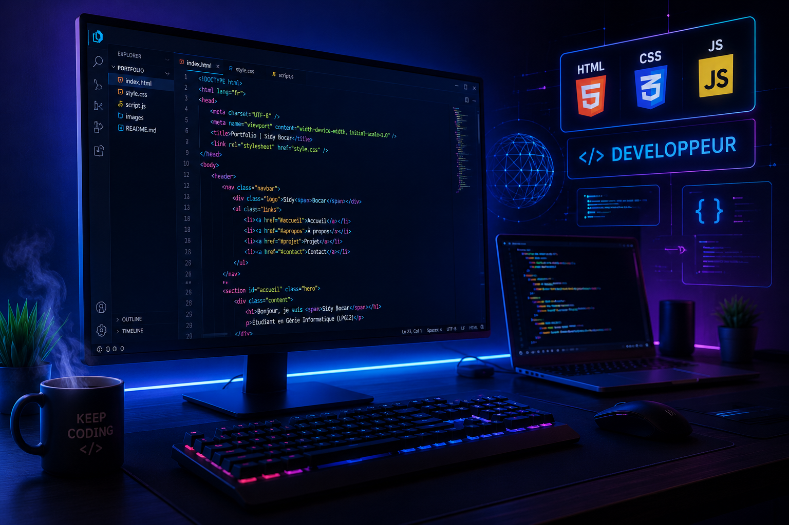

Étudiant en Licence Professionnelle Génie Informatique (LPGI2)

J'ai eu a développe un site web moderne consacré au Real Madrid, développé avec HTML, CSS et JavaScript.
🏆 Projet : Site Web Real Madrid
Ce projet consiste en la conception et au développement d'un site web dédié au Real Madrid. Il présente l'histoire du club, son palmarès, ses joueurs emblématiques, son stade et d'autres informations importantes. Le site a été développé avec HTML, CSS et JavaScript dans le but de mettre en pratique mes compétences en développement web, en conception d'interfaces modernes et en organisation du contenu. Ce projet m'a permis d'améliorer la structure de mes pages, la navigation entre les différentes sections et l'expérience utilisateur.
Technologies utilisées :
Objectif :
Créer un site web moderne, responsive et informatif consacré au Real Madrid tout en renforçant mes compétences en développement web.sidybocar246@gmail.com
+221 77 545 06 03
Saint-Louis, Sénégal
Je m'appelle Sidy Bocar, étudiant en Licence Professionnelle Génie Informatique (LPGI2) à l'Université Gaston Berger de Saint-Louis.
Je suis passionné par le développement web et j'aime créer des sites modernes avec HTML, CSS, JavaScript et du SQL.
Mon objectif est de devenir développeur Full Stack et de réaliser des applications web professionnelles.